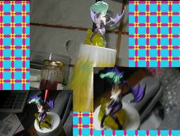

「namco」 × CAPCOM モリガン (on Phobos)

バンダイ ナムコ クロス カプコンのモリガンです。残念ながら前髪をどこかに落として失くしてしまったので、やむをえず、いくつかポーズをとってそれをゴマカそうとしてみました。結果、風の妖精のようにも見えてしまいました。 なお、フィギュアのページがちょっと探したのですが見つかりませんでした。ちなみに元のゲームは PS2 NAMCO x CAPCOM です。第二段が出るならワンダーモモが欲しいです。「サンタさんお願いっ！」つっても私は、クリスマスにプレゼントをもらえるような歳ではないのですが。 背景は身のまわりおよび、GIMP で描いたものです。それをさらに GIMP でアレンジしました。 更新：2006-05-07 初公開：2006年05月07日 22:41:24 最新版：2006年05月07日 22:41:24 Comments: 更新：前髪は見つかりました。(別のフィギュアでまた失くしものをしたようですけど。orz) 投稿: JRF | 2006-05-12 19:33:05 (JST) Links: PS2 NAMCO x CAPCOM: http://namco-ch.net/namco_x_capcom/ GIMP: http://www.gimp.org/